Luminous joue la musique déjà présente sur votre ordinateur, et nul besoin d'une bibliothèque pour commencer. Tant que rien n'a été ajouté, l'écran d'accueil propose d'abord Écouter de la musique : Ouvrir des fichiers, Lire un dossier, ou déposez simplement des fichiers sur la fenêtre.
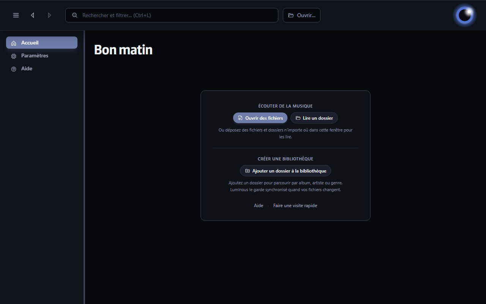
Pour organiser votre musique, choisissez Ajouter un dossier à la bibliothèque sous Créer une bibliothèque — ou suivez ces étapes. Indiquez un dossier à Luminous une seule fois, et il continue de surveiller les nouveaux fichiers par la suite.
1
Ouvrez Paramètres → Sources et ajoutez le dossier où se trouve votre musique.
2
Luminous l'analyse, puis continue de le surveiller — déposez-y un nouvel album et il apparaît de lui-même.
3
Tout se retrouve sous Collection dans la barre latérale, classé en Artistes, Albums et Chansons.
4
Un fichier déplacé ou renommé sur le disque? Luminous remarque le changement de lui-même et met à jour votre bibliothèque — aucune nouvelle analyse requise.
Accueil est la première chose que vous voyez à l'ouverture de Luminous — un aperçu continu de votre bibliothèque qui se met à jour à mesure que vous écoutez. Le message d'accueil en haut change selon le moment de la journée.
•
Top Artistes — les artistes vers lesquels vous vous tournez le plus.
•
Top des albums — classés selon les minutes écoutées dans votre semaine locale, d'après le réglage Commencer la semaine le. Les albums qui reviennent au palmarès portent un badge Retour.
•
Les plus jouées — les chansons que vous avez le plus écoutées.
•
Ajouts récents — ce qui vient d'arriver dans votre bibliothèque.
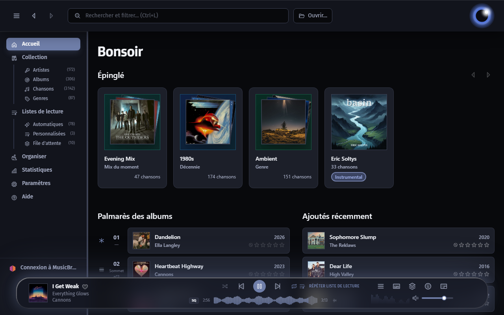
Nouveau sur Luminous? Une visite guidée de l'interface vous sera proposée. La visite se termine sur Accueil, et vous pouvez la revoir à tout moment depuis la section Aide.
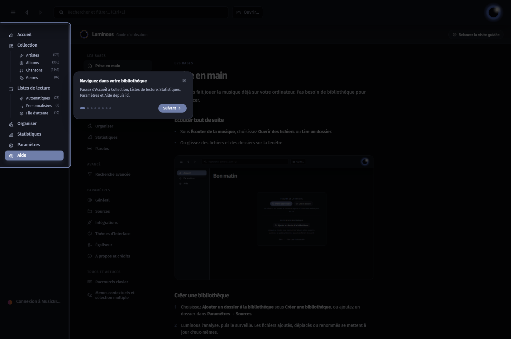
Les bases
Votre collection
Collection dans la barre latérale se déploie en quatre vues — Artistes, Albums, Chansons et Genres — chacune affichant un compte à jour et un contrôle de tri en haut à droite :
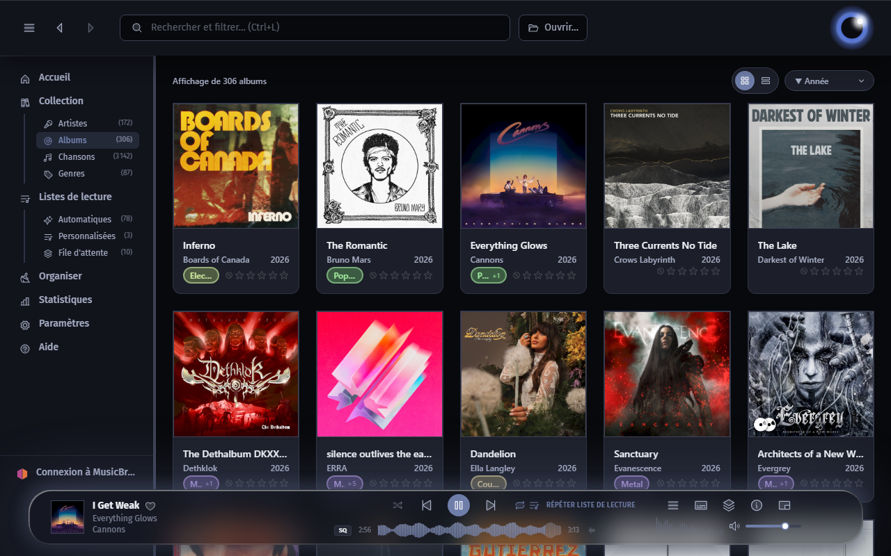
La vue Chansons liste toute votre bibliothèque sous forme de tableau triable. Cliquez sur Colonnes pour ajouter ou retirer les champs affichés — y compris Nombre d'écoutes et Nombre de sauts, si vous voulez un aperçu de vos propres habitudes d'écoute.
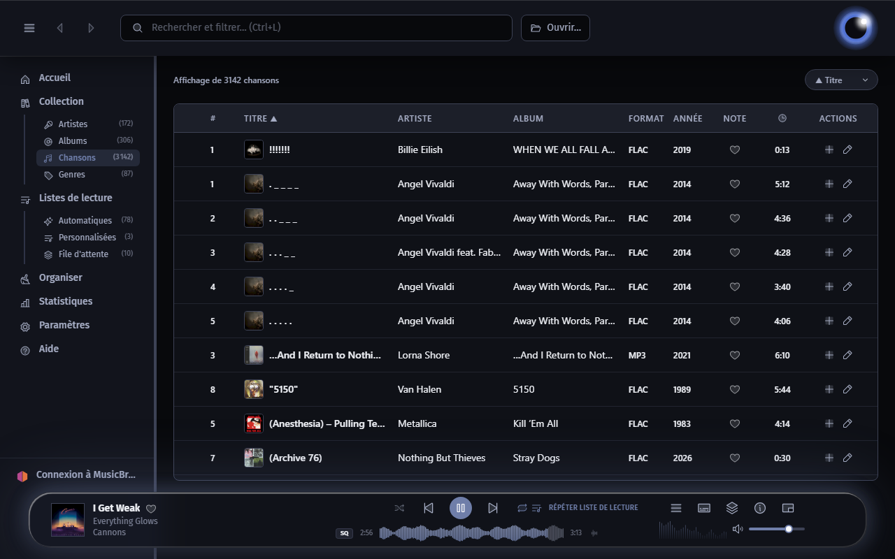
La vue Genres dans Collection regroupe chaque tag de votre bibliothèque en cartes personnalisables dotées de touches de couleur distinctes. Le nombre de chansons d'une carte regroupe automatiquement tous les morceaux du genre parent et de ses sous-genres.
•
Organisation par glisser-déposer : Glissez une puce de sous-genre sur une autre carte pour la reclasser, déplacez-la au sein d'une carte pour réorganiser, ou attrapez la poignée d'une carte pour rétrograder un genre entier en sous-genre.
•
Actions rapides sur les tags : Faites un clic droit sur une puce ou sur l'en-tête d'une carte pour Renommer, Promouvoir en genre principal, ou Supprimer le tag de tous les morceaux. Cliquez sur la pastille de couleur d'une carte pour personnaliser sa teinte.
•
Lecture et listes instantanées : Cliquez sur n'importe quelle carte de genre ou puce de sous-genre pour ouvrir sa liste de lecture automatique dédiée — avec Tout lire, Aléatoire, filtre de recherche et modes de sélection (Tout, Favoris, Essentiels, Découverte, Pépites).
•
Vues Cartes et Lignes : Basculez entre la grille de cartes et l'affichage compact en lignes, ou passez à la vue plate Tags en haut à droite pour parcourir un nuage de tags interactif dimensionné selon le nombre de chansons.
•
Gestion groupée des tags : Cliquez sur Sélectionner les tags pour choisir plusieurs tags à la fois afin de Fusionner la sélection sous un nom unique ou Supprimer la sélection en lot.
•
Morceaux non étiquetés : Les morceaux sans métadonnée de genre sont rassemblés dans un groupe dédié Sans genre au bas de la vue pour les retrouver et les étiqueter facilement.
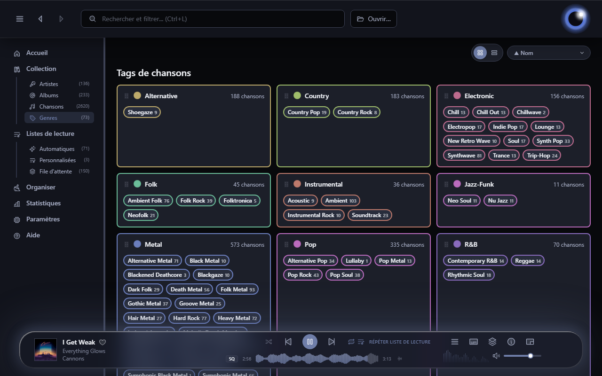
Ouvrez un album pour voir sa liste de pistes complète, ainsi qu'un panneau latéral avec les détails du fichier de la chanson en cours — format, débit binaire, fréquence d'échantillonnage et volume sonore. Tout jouer commence à la première piste; Aléatoire et jouer mélange l'ordre; le bouton + ajoute cet album ou cette chanson à la liste de lecture active — la file d'attente, par défaut.
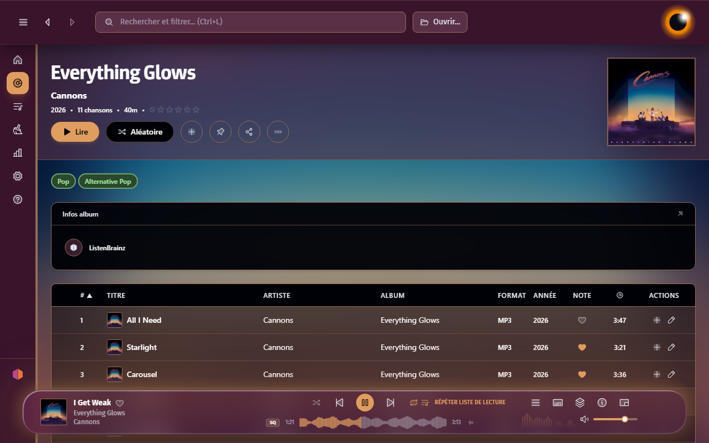
Cliquez sur l'icône de crayon à côté de Tout jouer pour ouvrir Modifier les étiquettes de l'album — corrigez le titre, l'artiste, le genre ou l'année de sortie pour toutes les pistes de l'album à la fois. Le même éditeur est offert par piste depuis l'icône de crayon de chaque rangée. Rechercher AcoustID tente d'identifier la chanson et de récupérer automatiquement les bonnes étiquettes de métadonnées.
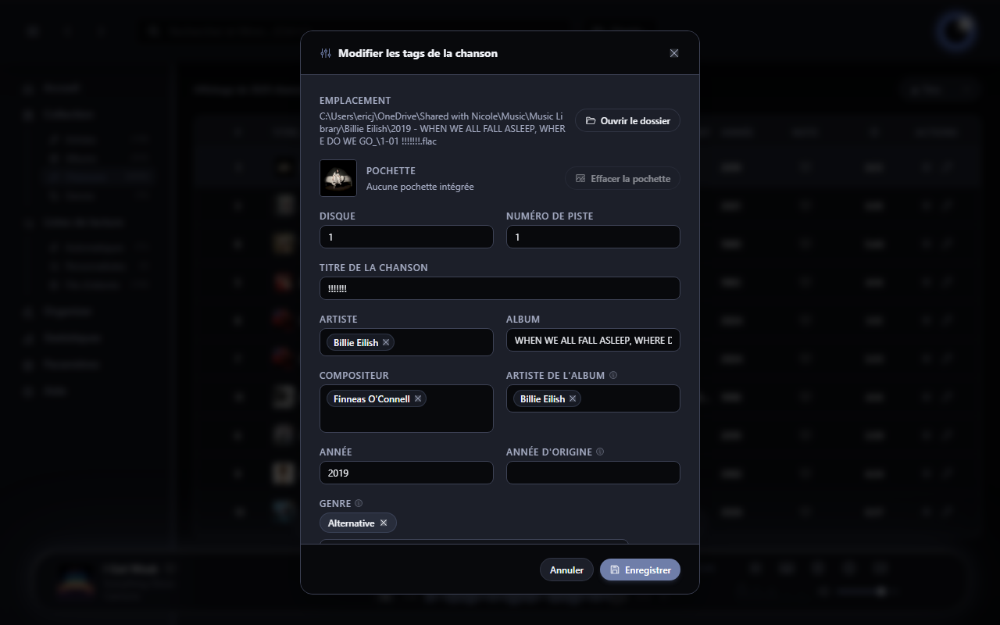
Artiste, Artiste de l'album, Compositeur et Genre acceptent tous plusieurs valeurs — appuyez sur Entrée après chaque valeur pour l'ajouter, et Luminous les conserve comme des étiquettes distinctes et recherchables séparément plutôt qu'une seule longue chaîne. Chacun de ces champs (ainsi que Titre et Album) possède aussi son propre champ Trier comme, pour classer « The Beatles » sous « Beatles, The » ou un genre comme « Gothic Metal » sous un « Metal » plus large, sans changer l'étiquette elle-même. Luminous lit aussi les anciennes étiquettes ID3v1 sur les MP3 plus anciens, et Effacer la pochette retire la pochette intégrée d'une piste en un clic.
Une page d'artiste regroupe son travail en Albums, EP et Singles sous une bande d'onglets Discographie. Sous la Discographie se trouvent les listes de lecture qui incluent l'artiste. Cliquez sur Modifier pour ajouter une biographie, un site officiel, et des liens vers Bandcamp, Spotify, Instagram et d'autres plateformes — ils apparaissent dans un panneau À propos avec des liens cliquables directement sur la page de l'artiste.
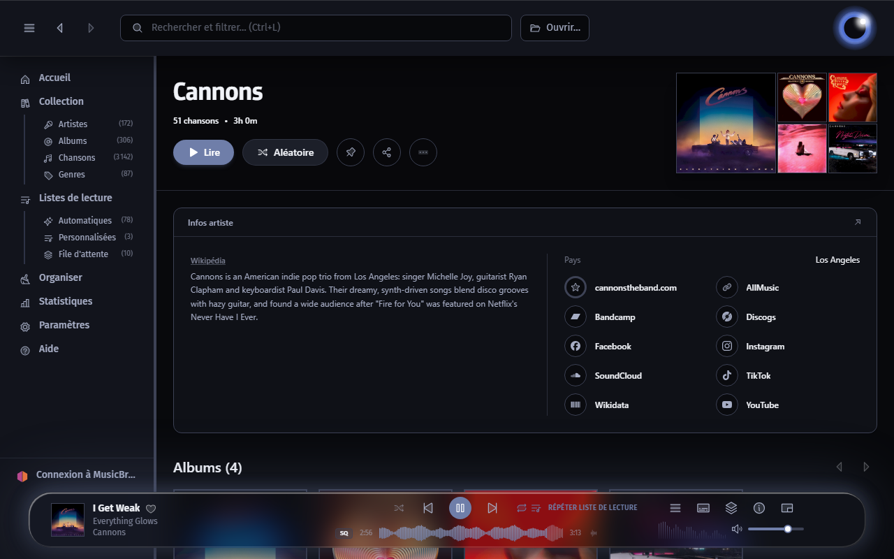
Les bases
Recherche et navigation
La barre de recherche en haut de la fenêtre parcourt à la fois les chansons, les albums et les artistes — vous n'avez jamais à réfléchir à l'endroit où quelque chose est classé avant de partir à sa recherche.
•
Le logo Luminous réagit à la musique en cours de lecture — cliquez dessus pour activer ou désactiver cet effet.
1
Appuyez sur CtrlL (ou cliquez sur la barre de recherche) depuis n'importe où dans Luminous.
2
Commencez à taper — les chansons, albums, artistes et listes de lecture correspondants apparaissent au fur et à mesure.
3
Les flèches de retour et d'avance à côté de la barre de recherche parcourent votre historique de navigation, comme dans un navigateur.
4
Cliquez sur Ouvrir… (ou appuyez sur CtrlO) pour lire des fichiers depuis n'importe où sur votre ordinateur.
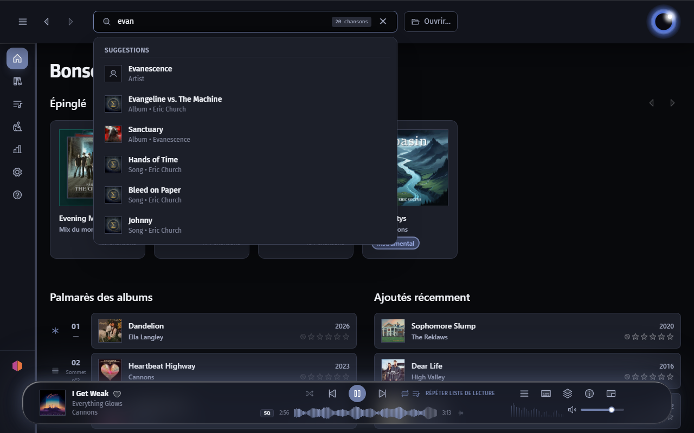
Les bases
Lecture en cours et le mini lecteur
Une barre de lecture apparaît au bas de la fenêtre lorsqu'une chanson joue, avec la forme d'onde, les commandes de lecture, le volume et un raccourci vers la vue Lecture en cours complète.
Cliquez sur la pochette de l'album dans la barre de lecture pour activer le mode Immersif (Ctrl2 fonctionne aussi).
•
Cliquez sur le cœur pour ajouter la chanson à vos favoris, ou donnez-lui une note de 1 à 5 étoiles, selon vos paramètres.
•
Les touches multimédias lecture/pause, piste suivante et volume fonctionnent même lorsque Luminous n'est pas la fenêtre active, et la lecture apparaît dans les commandes multimédias de votre système — pour la voir et la piloter sans revenir à l'application.
•
Cliquez sur Aléatoire pour parcourir cinq modes :
Tout mélanger : lire toutes les pistes dans un ordre aléatoire.
Mélanger dans l'album : lire les albums dans leur ordre normal, mais mélanger les pistes à l'intérieur de chaque album.
Mélanger les albums : lire les albums dans un ordre aléatoire, mais garder les pistes de chaque album dans l'ordre.
Mélanger les artistes : lire toutes les pistes d'un artiste avant de passer à un nouvel artiste choisi au hasard.
Aléatoire désactivé : lire les pistes dans leur ordre séquentiel normal.
•
Cliquez sur Répéter pour parcourir quatre modes :
Répéter la chanson : boucler indéfiniment sur la piste en cours.
Répéter l'album : boucler indéfiniment sur l'album en cours.
Répéter la liste de lecture : boucler indéfiniment sur la file d'attente ou la liste de lecture en cours.
Répétition désactivée : lire la file d'attente en cours normalement et s'arrêter à la fin.
•
Cliquez sur la forme d'onde pour sauter à un autre moment de la chanson.
•
Un petit affichage du spectre à côté du contrôle de volume vous donne un aperçu en direct des fréquences de la chanson pendant sa lecture.
•
Cliquez sur l'icône à côté de la forme d'onde pour afficher plutôt les bandes de fréquences. Elles superposent les trois bandes à la fois — bleu pour les graves, ambre pour les médiums (voix, caisses claires, lignes principales), blanc pour les aigus (charleston, cymbales, transitoires) — les bandes plus hautes portant plus d'énergie.
•
Cinq icônes se trouvent à droite de la barre de lecture : un menu d'actions rapides pour la chanson en cours, un bouton pour afficher les paroles, un raccourci vers la file d'attente, le bouton du panneau d'informations, et le bouton du mini lecteur.
•
L'icône « info » affiche ou masque le panneau d'informations à droite. Son raccourci est CtrlI (ou Ctrl3).
•
L'icône du mini lecteur à l'extrême droite détache le lecteur en un petit mini lecteur flottant — pratique pour garder un œil sur la lecture pendant que vous travaillez dans d'autres applications. CtrlM l'active ou le désactive depuis n'importe où.
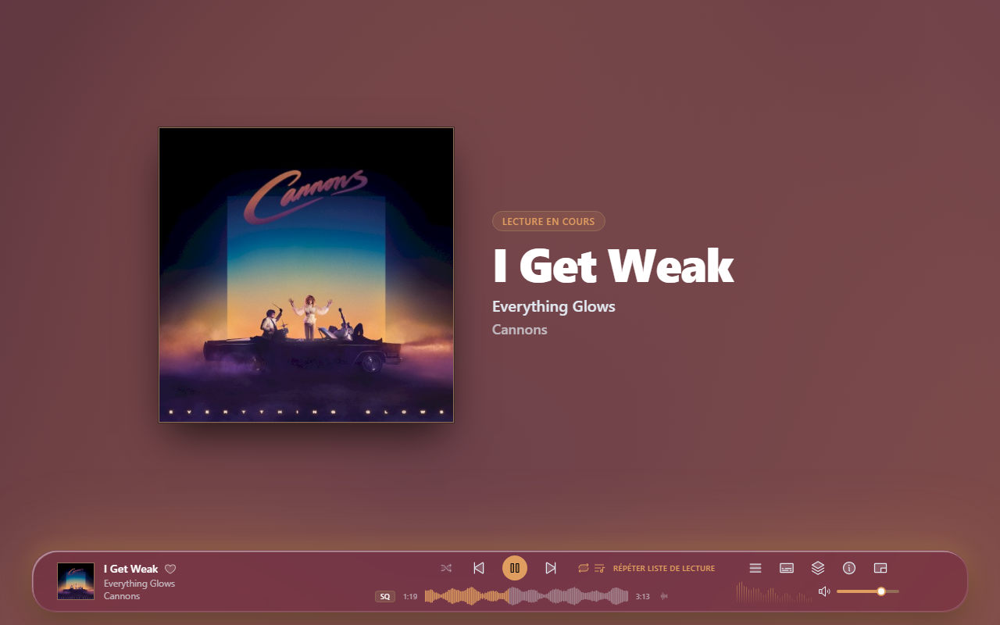
Mini lecteur, au repos
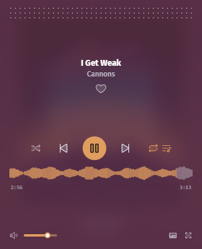
Mini lecteur, au survol
•
Survolez le mini lecteur pour révéler ses commandes de lecture et de fenêtre. Vous pouvez noter la chanson.
•
Déplacez le mini lecteur en le saisissant n'importe où le long du haut.
•
Faites glisser le curseur de volume en bas à gauche pour régler le volume.
•
Basculez entre la pochette d'album et les paroles synchronisées à l'aide du bouton de paroles dans les commandes du bas.
•
Restaurer la fenêtre complète (CtrlM) en bas à droite.
Les bases
Listes de lecture
Si vous cliquez sur le + à côté d'une chanson ou d'un album, il se retrouve dans votre liste Queue par défaut. Vous créez une nouvelle liste et voulez y ajouter des éléments plutôt? Marquez-la Active d'abord, et tout ce que vous ajoutez avec + par la suite s'y retrouvera à la place.
Il en existe trois sortes : celles que vous créez vous-même, les listes intelligentes que Luminous remplit selon une règle que vous définissez, et les listes automatiques qu'il crée et actualise de lui-même.
•
Personnalisée : créez une liste de lecture, nommez-la, puis glissez-y des chansons depuis n'importe où dans votre collection.
•
Intelligente : définissez une règle comme « Genre est Rock et Année est après 2015 », et Luminous la garde à jour à mesure que votre collection grandit.
•
Automatique : les listes par Genre, par Décennie et par BPM se créent d'elles-mêmes à partir de votre bibliothèque et s'actualisent chaque jour avec jusqu'à 25 pistes — chacune n'apparaît qu'une fois qu'elle compte au moins 25 chansons correspondantes. Cliquez sur une liste pour parcourir ses pistes, ou appuyez sur Actualiser à tout moment pour une nouvelle sélection.
Les listes par BPM répartissent les chansons dans cinq catégories de tempo fixes, selon l'étiquette BPM de chaque chanson :
Catégorie
Plage BPM
Tempo lent BPM
60–90
Tempo moyen BPM
90–115
Tempo enlevé BPM
115–130
Haute énergie BPM
130–150
Extrême BPM
150+
Luminous ne calcule pas le BPM lui-même — il lit l'étiquette BPM déjà présente sur chaque fichier. Ajoutez des étiquettes BPM avec l'éditeur d'étiquettes ou l'outil de votre choix; les chansons sans étiquette n'entreront dans aucune catégorie. Vous pouvez créer vos propres catégories de BPM avec les listes de lecture intelligentes.
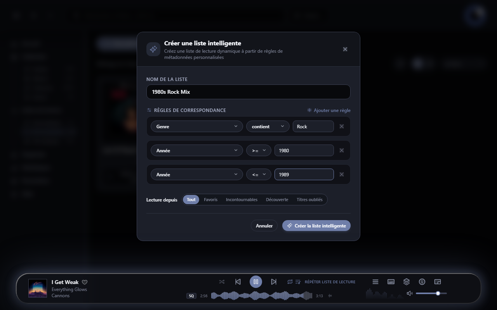
Modification d'une règle intelligente
Vous pouvez aussi glisser des fichiers audio ou un dossier entier directement sur la fenêtre de Luminous pour les jouer ou les mettre en file d'attente — déposez normalement pour remplacer la file d'attente et démarrer la lecture, ou maintenez Maj en déposant pour les ajouter à la fin de la file d'attente à la place.
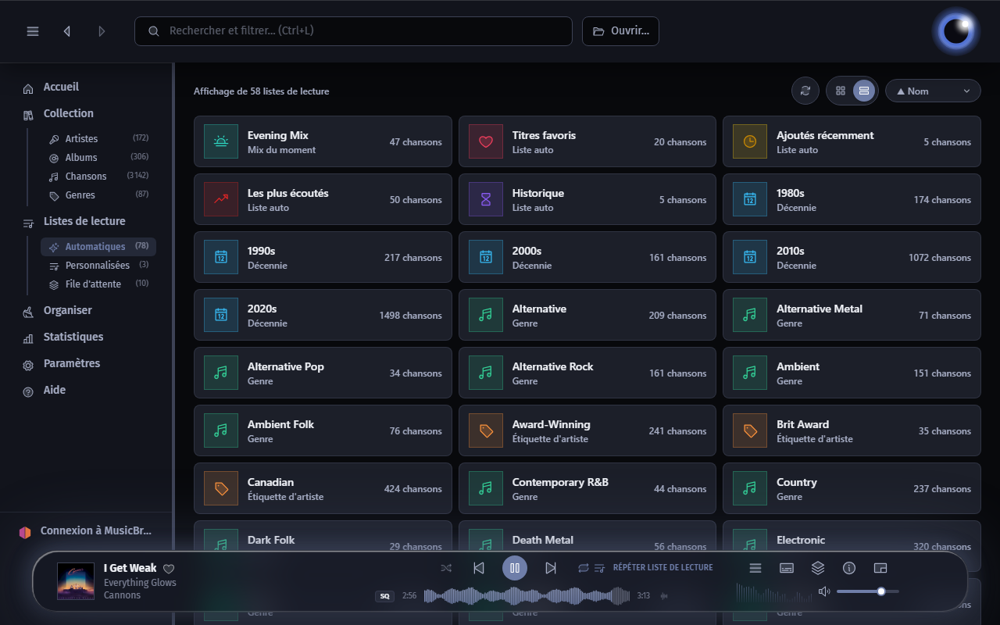
Vignette de liste automatique
Gérer une liste de lecture
•
Double-cliquez sur le nom d'une liste de lecture (ou utilisez son icône crayon) pour la renommer directement.
•
Faites glisser des rangées pour réorganiser une liste — sélectionnez-en plusieurs d'abord pour les déplacer en groupe. Cliquez sur l'en-tête d'une colonne pour trier selon celle-ci, ou utilisez le champ de recherche au-dessus de la liste de pistes pour filtrer les chansons correspondantes.
•
Supprimer les doublons et Supprimer les pistes indisponibles nettoient une liste en un clic; Vider la liste la vide; Supprimer la liste la retire pour de bon.
•
Les tableaux de file d'attente et de liste de lecture peuvent afficher une colonne Date d'ajout via le sélecteur de colonnes, en plus des autres déjà présentes — pratique pour trier une liste selon la récence d'ajout de chaque piste.
Importer et exporter
•
Importez des listes de lecture depuis d'autres applications, ou exportez les vôtres, aux formats .m3u, .m3u8, .pls ou .xspf.
•
L'exportation propose une option Chemins relatifs, pour que la liste fonctionne toujours après l'avoir déplacée vers un autre dossier ou ordinateur.
Les bases
Statistiques
Statistiques dans la barre latérale montre vos habitudes d'écoute — calculées entièrement sur votre propre appareil à partir de votre historique de lecture local, jamais envoyées ailleurs. Basculez entre 7 derniers jours, 28 derniers jours et Dernière année pour changer la période.
•
Meilleurs artistes, Meilleurs albums, Meilleurs titres et Meilleurs genres classent ce que vous avez réellement écouté sur la période sélectionnée. Cliquez sur une entrée pour y accéder directement.
•
Une carte thermique suit les minutes d'écoute par jour, avec votre Série en cours et votre Plus longue série de jours d'écoute consécutifs.
•
Moment de la journée répartit votre écoute en Matin, Après-midi, Soirée et Fin de nuit, pour voir quand vous écoutez vraiment.
•
Vous ne voulez pas qu'une chanson, un album, un artiste ou un genre fausse vos chiffres ? Faites un clic droit dessus n'importe où dans votre collection et choisissez Ne pas inclure dans les statistiques — annulez plus tard depuis le même menu.
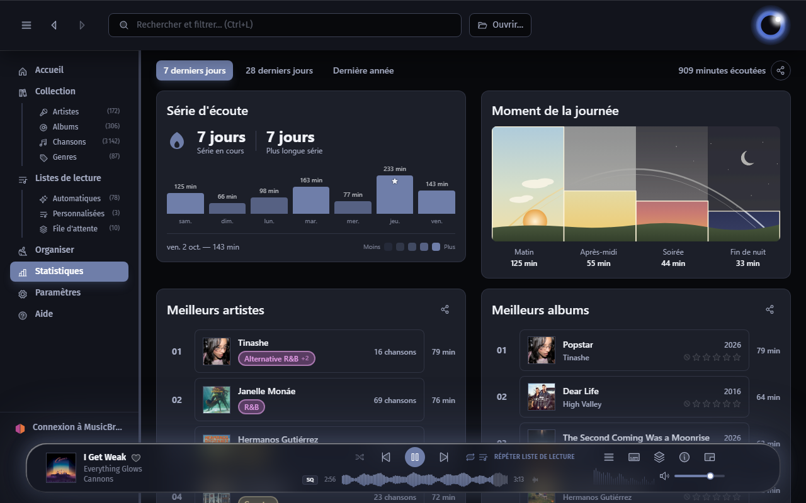
Les bases
Paroles
Activez Paroles depuis la barre de lecture pour suivre ce qui joue — la ligne en cours est mise en surbrillance en synchronisation avec la musique, le reste étant estompé au-dessus et en dessous. Luminous recherche automatiquement les paroles de la chanson en cours; s'il s'agit d'un instrumental, vous pouvez le marquer comme tel pour que Luminous arrête de chercher.
•
Si les paroles n'ont pas encore été trouvées, cliquez sur Rechercher à nouveau pour relancer la recherche.
•
Synchronisation décalée, ou une ligne erronée? Modifier vous permet de corriger le texte ou d'ajuster la synchronisation vous-même.
•
Toutes les paroles n'ont pas d'horodatage — dans ce cas, Luminous affiche plutôt les paroles en texte simple.
•
Cliquez sur une ligne des paroles pour sauter à ce moment de la chanson.
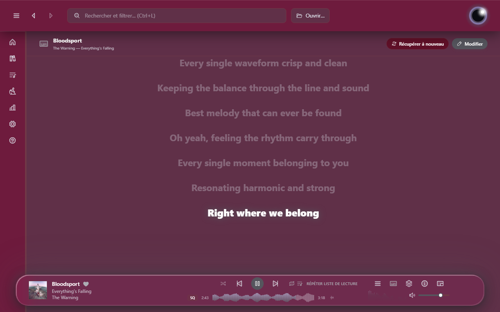
Avancé
Recherche avancée
Taper des termes champ:valeur dans la barre de recherche transforme une recherche normale en filtre précis sur toute votre bibliothèque — pas d'écran de recherche avancée séparé à ouvrir.
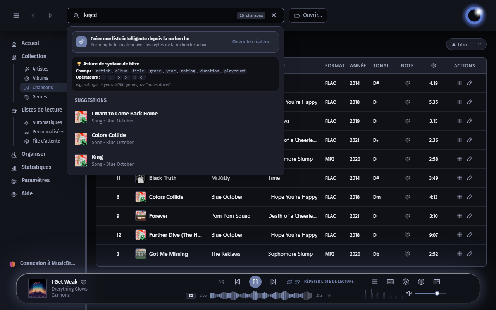
Syntaxe
•
Sans opérateur sur un champ texte (artiste, album, genre…), le sens par défaut est contient : genre:rock correspond à tout genre contenant « jazz ».
•
Sans opérateur sur un champ numérique (année, note, bpm…), le sens par défaut est correspondance exacte : year:1994 ne correspond qu'à 1994.
•
Plusieurs termes se combinent avec ET : rating:>=4 year:<2000 genre:rock — chansons notées 4 étoiles ou plus, sorties avant 2000, dans un genre contenant « rock ».
•
Les mots seuls sans deux-points sont du texte libre, combinés avec OU sur titre/artiste/album — mélangez-les librement : rating:>=4 "tom cochrane".
•
Entourez de guillemets une valeur contenant des espaces : artist:"tom cochrane". Les noms de champs ne sont pas sensibles à la casse.
Opérateurs
Symbole
Signification
=
égal à
!=
différent de
>
supérieur à
>=
supérieur ou égal
<
inférieur à
<=
inférieur ou égal
(aucun)
contient (texte) / égal à (numérique)
Référence des champs
Chaque champ ci-dessous fonctionne dans la barre de recherche et comme règle dans le créateur de liste intelligente. La fenêtre « Aide-mémoire de syntaxe » de l'application n'affiche qu'un sous-ensemble illustratif — voici la liste complète.
Champ (alias)
Type
Correspond à
artist
texte
Artiste (repli sur Artiste de l'album)
artist_tag
texte
Étiquette Artiste
album_artist
texte
Artiste de l'album seulement
album
texte
Titre de l'album
title
texte
Titre de la piste
genre
texte
Genre
composer
texte
Compositeur
key / initial_key
texte
Tonalité (ex. « D », « Am », « D♭ »)
bpm
nombre
Battements par minute
year
nombre
Année de sortie
originalyear / original_year
nombre
Année de sortie originale (vs. réédition)
rating / stars
nombre
Note en étoiles, 0–5
playcount / plays
nombre
Nombre d'écoutes
skipcount / skips
nombre
Nombre de sauts
lastplayed / last_played
nombre
Horodatage de dernière écoute (secondes Unix)
added
nombre
Horodatage d'ajout (secondes Unix)
track / track_number
nombre
Numéro de piste
disc / disc_number
nombre
Numéro de disque
bitrate
nombre
Débit binaire (kbps)
samplerate / sample_rate
nombre
Fréquence d'échantillonnage (Hz)
bitdepth / bit_depth
nombre
Profondeur de bits
channels
nombre
Nombre de canaux
compilation
0/1
Indicateur de compilation
duration / length
durée
Longueur de la piste — voir ci-dessous
Valeurs de durée
Le champ duration/length accepte des secondes simples (duration:>180), MM:SS (duration:>3:30), ou H:MM:SS (duration:<1:02:03).
Créer une liste intelligente depuis la recherche
Dès que votre requête contient au moins un terme champ:valeur, une carte Créer une liste intelligente depuis la recherche apparaît en haut du menu. Cliquez sur Ouvrir le créateur → pour ouvrir la fenêtre de liste intelligente avec chaque terme déjà ajouté comme règle — vous pouvez ensuite ajouter d'autres règles, nommer la liste, et enregistrer.
Exemples pratiques
Objectif
Requête
Chansons rock notées 4+ étoiles d'avant 2000
rating:>=4 year:<2000 genre:rock
Chansons en tonalité de D
key:d
Pistes rapides (120–130 BPM)
bpm:>=120 bpm:<=130
Mélange texte libre + champ
rating:>=4 "tom cochrane"
Albums compilation seulement
compilation:1
Pistes de plus de 3:30
duration:>3:30
Paramètres
Général
Les préférences à l'échelle de l'application — comportement au démarrage et autres paramètres par défaut du quotidien se trouvent ici.
•
Langue : basculez l'interface entre l'anglais et le français.
•
Style de notation : choisissez si les chansons sont notées avec un cœur, ou sur une échelle de 1 à 5 étoiles — c'est le paramètre mentionné dans la section Lecture en cours.
•
Commencer la semaine le : dimanche ou lundi. Choisissez quel jour les palmarès et statistiques hebdomadaires considèrent comme le début de la semaine.
•
Application et mises à jour : vérifiez les mises à jour à la demande et consultez votre version installée. Les notifications et fonctionnalités disponibles dépendent de la façon dont Luminous a été installé. Les installations via le Microsoft Store gèrent les mises à jour automatiquement pour vous.
•
Réduire dans la barre d'état système : lorsque cette option est activée, fermer la fenêtre masque Luminous dans la barre d'état système au lieu de quitter l'application. Le menu contextuel de l'icône dans la barre d'état propose Lecture/Pause, Suivant et Précédent, pour contrôler la lecture sans même rouvrir la fenêtre.
•
Lancer au démarrage : démarre Luminous automatiquement quand vous ouvrez une session.
•
Emplacement des données et mode portable : indique où Luminous stocke la base de données de la bibliothèque (luminous.db), le cache des pochettes et les préférences. Les versions autonomes en archive ZIP pour Windows s'exécutent par défaut en mode portable, conservant toutes les données dans un sous-dossier data à côté de l'exécutable pour vous permettre de transporter votre lecteur sur disque USB externe. Sous Linux, les paquets AppImage utilisent l'emplacement système par défaut et peuvent passer en mode portable en plaçant un fichier marqueur portable à côté du fichier AppImage.
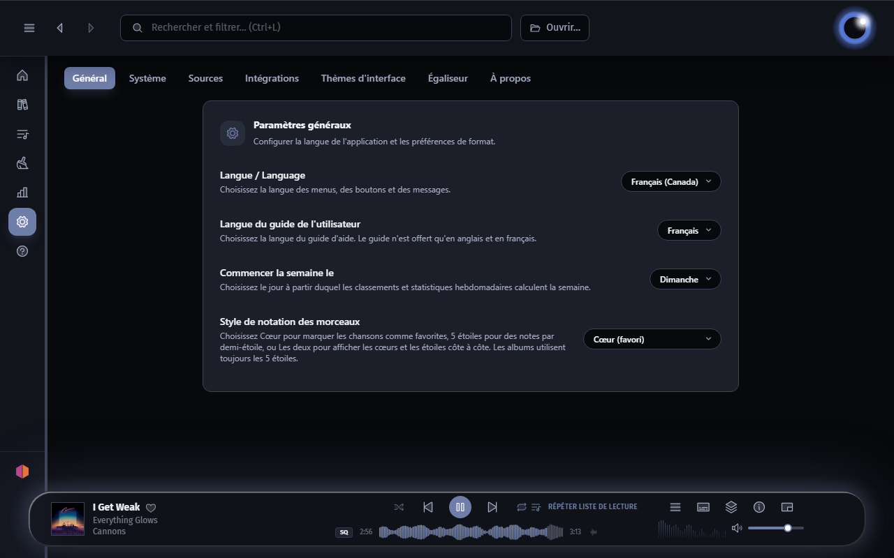
Paramètres
Sources
Ajoutez ou retirez les dossiers que Luminous surveille pour la musique. Une fois un dossier ajouté, il reste surveillé — les nouveaux fichiers apparaissent d'eux-mêmes, sans nouvelle analyse.
•
Surveiller les dossiers en temps réel bascule si Luminous surveille les changements en direct, ou vérifie seulement quand vous le lui demandez.
•
Réanalyser au démarrage fait vérifier vos dossiers par Luminous à chaque lancement.
•
Analyse incrémentielle ne recherche que ce qui a changé; Analyse complète forcée relit tout depuis le début. Les deux affichent une progression en direct.
•
Enregistrer les pochettes à côté de votre musique enregistre les pochettes intégrées extraites et les pochettes iTunes téléchargées directement dans vos dossiers d'albums sous forme de cover.jpg, et les photos d'artistes sous forme de artist.jpg. Désactivée par défaut, cette option rend vos pochettes portables pour d'autres lecteurs et réinstallations sans modifier les illustrations de dossier existantes.
•
Un panneau de statistiques indique la dernière analyse de votre bibliothèque, ainsi que le nombre de chansons, d'albums, d'artistes et la taille totale.
•
Vous pouvez aussi ajouter des serveurs multimédias distants pour diffuser votre musique sur le réseau :
– WebDAV : Un protocole de fichiers basé sur HTTP pris en charge par les hébergements cloud personnels et les NAS (comme Nextcloud, ownCloud ou Synology). Il permet à Luminous de lire vos fichiers audio distants directement sans avoir à monter de lecteur réseau.
– OpenSubsonic : Un standard d'API ouvert très répandu pour les serveurs de streaming musical personnels (tels que Navidrome, Gonic, LMS ou Subsonic). Luminous synchronise la bibliothèque du serveur, diffuse la musique sur le réseau et peut transmettre vos écoutes et statistiques au serveur.
Les dossiers et serveurs distants sont strictement en lecture seule — toute modification d'étiquette, d'illustration ou d'organisation reste locale à Luminous et n'est jamais réécrite sur le serveur.
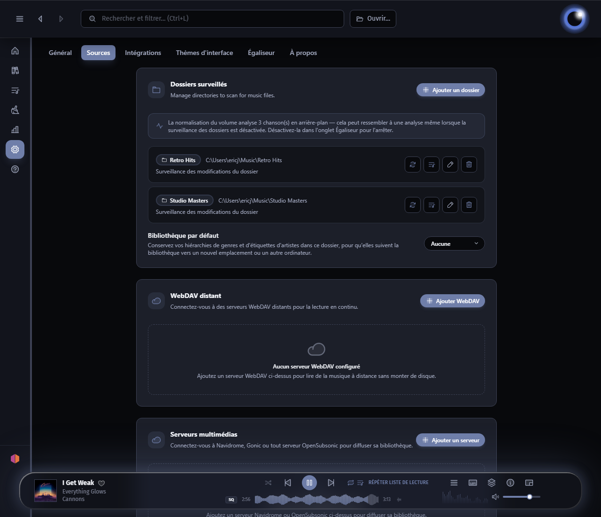
Paramètres
Intégrations
Paramètres → Intégrations connecte Luminous à quelques outils et services externes — chacun est facultatif, et chacun peut être désactivé pour garder cette partie de Luminous entièrement hors ligne.
•
Sources de données en ligne : alimente le panneau d'informations et les pages d'artistes avec des notes, tags, avis et biographies récupérés depuis MusicBrainz, CritiqueBrainz et Wikipedia. Désactivez Récupérer le contexte et les biographies pour rester entièrement hors ligne.
•
Scrobbler ListenBrainz : collez un jeton utilisateur ListenBrainz et cliquez sur Valider et enregistrer pour connecter votre compte. Une fois connecté, activez le scrobbling, et choisissez séparément de transmettre l'état En cours de lecture et les notes — avec les notes activées, un bouton Synchroniser les favoris ponctuel transmet aussi vos favoris existants.
•
Mettre en pause le scrobbling arrête l'envoi des chansons écoutées sans déconnecter votre compte. Les chansons écoutées hors ligne sont mises en file d'attente localement et envoyées avec Synchroniser une fois de retour en ligne.
•
MusicBrainz Picard : Luminous détecte automatiquement une installation de Picard existante et indique où il l'a trouvée, ou vous laisse pointer vers un chemin personnalisé — pratique pour accéder aux outils de tagging de Picard sur un fichier sans quitter Luminous.
•
Discord Rich Presence : affiche ce que vous écoutez sur votre profil Discord, avec en option le nom de l'album et un minuteur de progression en direct. Nécessite que l'application de bureau Discord soit ouverte.
•
fanart.tv : récupère les portraits d'artistes lorsqu'aucun n'est trouvé localement. Ajoutez votre propre clé API, puis cliquez sur Valider et enregistrer. Sans clé, Luminous utilise l'image Wikidata de l'artiste, s'il y en a une.
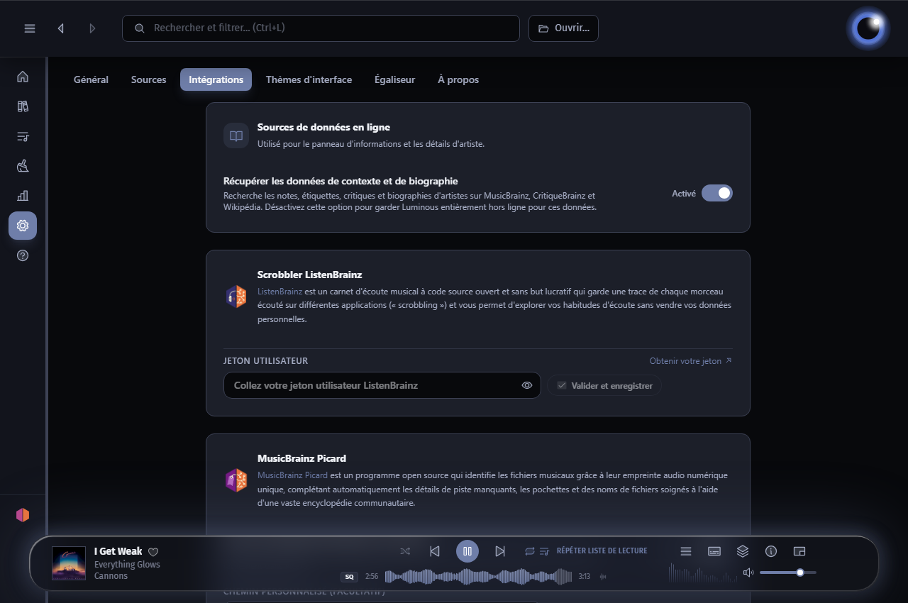
Bases
Organiser
Des outils groupés pour renommer et déplacer les fichiers de votre bibliothèque selon leurs étiquettes.
Modèle de nom
Choisissez une carte prédéfinie — Par défaut ou Alternative — ou optez pour Personnalisé pour écrire votre propre modèle avec le champ de texte libre et les variables ci-dessous. Un aperçu en arborescence se met à jour en direct selon votre choix, montrant artiste → album → pistes avec des données d'exemple pour voir l'effet immédiatement.
Destination et options
Choisissez une destination avec un bouton à deux positions : Dossier(s) d'origine de la bibliothèque réorganise les fichiers sur place, ou passez à Personnalisé... pour afficher un champ de chemin de dossier et un bouton Parcourir. En dessous, trois options permettent de déplacer les fichiers connexes (pochettes, paroles, logs, fiches CUE) avec les pistes, de remplacer les espaces par des tirets bas, et de changer les lettres accentuées et la ponctuation.
Aperçu
Cliquez sur Actualiser l'aperçu avant que quoi que ce soit ne bouge. La liste n'affiche toujours que les fichiers qui vont réellement se déplacer, chacun avec un statut et un chemin De → Vers, plus un compte prêts/inchangés suivi d'une ligne de chemin de base commun. Rien ne se passe avant de valider avec Appliquer les modifications.
Nettoyer, en bas de la page, supprime les chansons manquantes, les dossiers vides et les doublons en un clic.
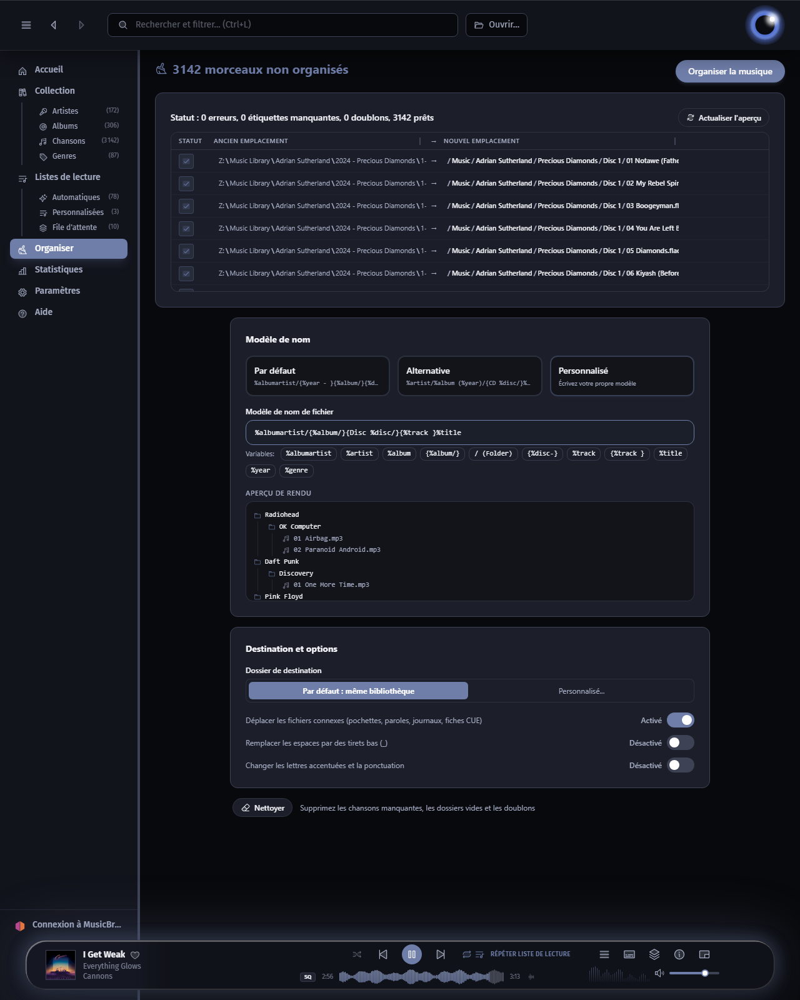
Variables de nommage des fichiers
Construisez un modèle de nommage ou de dossier en combinant ces variables avec vos propres espaces et textes. Placez un élément entre { } pour le rendre facultatif — il est omis quand la piste n'a pas de valeur pour lui. Un / à la fin, à l'intérieur des accolades, fait de cet élément un dossier.
Variable
Remplie par
%albumartist
L'artiste principal de l'album
%artist
L'artiste de la piste
%album
Titre de l'album
%disc
Numéro de disque
%track
Numéro de piste
%title
Titre de la piste
%year
Année de sortie
%genre
Genre
%track3
Numéro de piste, complété à trois chiffres
%rawtrack
Numéro de piste tel qu'enregistré dans l'étiquette, sans complément
Exemples
%disc-%track
2-07
Disc %disc
Disc 2
%year - %album
2019 - Reservoir
{%album/}
Ajoute un dossier au nom de l'album, seulement si la piste en a un
{%disc-}%track
Omet le « 1- » quand il n'y a pas de numéro de disque : 07, ou 1-07
{%track }%title
Ajoute « 07 » avant le titre, seulement s'il y a un numéro de piste
Paramètres
Égaliseur
Tout ceci se trouve sous Paramètres → Égaliseur. Vous n'avez pas besoin de connaître l'ingénierie audio pour l'utiliser — les réglages par défaut sonnent bien, et chaque changement s'applique instantanément, même en plein milieu d'une chanson. Le panneau se divise en trois parties : l'égaliseur lui-même, la normalisation du volume et les fondus de lecture — chacune peut être ajustée ou laissée telle quelle indépendamment.
•
Activez Activer l'égaliseur, puis choisissez un préréglage dans le menu déroulant — Pop, Rock, Renfort de basses, Voix, et plus — ou tracez votre propre courbe. La vue 10 bandes offre un curseur par fréquence fixe. Passez en mode Paramétrique quand vous avez besoin de précision : le graphique affiche la réponse combinée, et chaque bande est un point que vous faites glisser pour régler sa fréquence et son gain — faites défiler sur un point pour l'élargir ou le resserrer (Q), ou double-cliquez sur le graphique pour ajouter une bande, jusqu'à 20. La liste sous le graphique reprend les mêmes bandes en valeurs numériques, avec un Type de filtre pour chacune (crête, plateau grave ou plateau aigu), un interrupteur pour la contourner et un bouton pour la retirer. Point sélectionné, les flèches le déplacent et Page préc./suiv. change son Q. Réinitialiser les bandes remet tout à plat. Le curseur Préampli en haut relève ou abaisse le gain global avant qu'il n'atteigne les bandes, pour qu'une amplification n'écrête pas le signal.
•
En mode Paramétrique, cliquez sur Enregistrer sous… pour conserver les bandes et la préamplification actuelles comme préréglage personnel — il apparaît sous Mes préréglages dans le menu déroulant, à côté des préréglages intégrés. Quand l'un de vos préréglages est sélectionné, les boutons Renommer et Supprimer apparaissent à côté. Modifiez une bande et le menu affiche Personnalisé : choisir de nouveau le préréglage rétablit la version enregistrée. Luminous retient le préréglage sélectionné d'une session à l'autre.
•
Normalisation du volume aplanit l'écart de volume entre les pistes silencieuses et fortes, pour que vous n'ayez pas à ajuster le volume à chaque chanson. Définissez un Niveau cible en LUFS, et choisissez de Normaliser par piste (chaque chanson atteint la cible individuellement) ou par album (l'album entier est ajusté ensemble, préservant les dynamiques voulues entre les pistes). Luminous analyse votre bibliothèque en arrière-plan — un message de progression indique combien de pistes restent à traiter — et se rabat sur les balises ReplayGain intégrées, puis sur un Gain de repli fixe, pour tout ce qui n'a pas encore été mesuré.
•
Fondus et enchaînés adoucit le bouton pause/arrêt avec une courte Durée de fondu au lieu d'une coupure brutale, et peut fondre automatiquement la fin d'une chanson dans le début de la suivante sur une Durée d'enchaînement que vous définissez. Préserver l'enchaînement sans coupure pour le même album empêche l'enchaîné de s'activer entre les pistes d'un même album — utile pour les concerts live, les albums-concepts, ou tout ce qui est mixé pour s'enchaîner sans interruption.
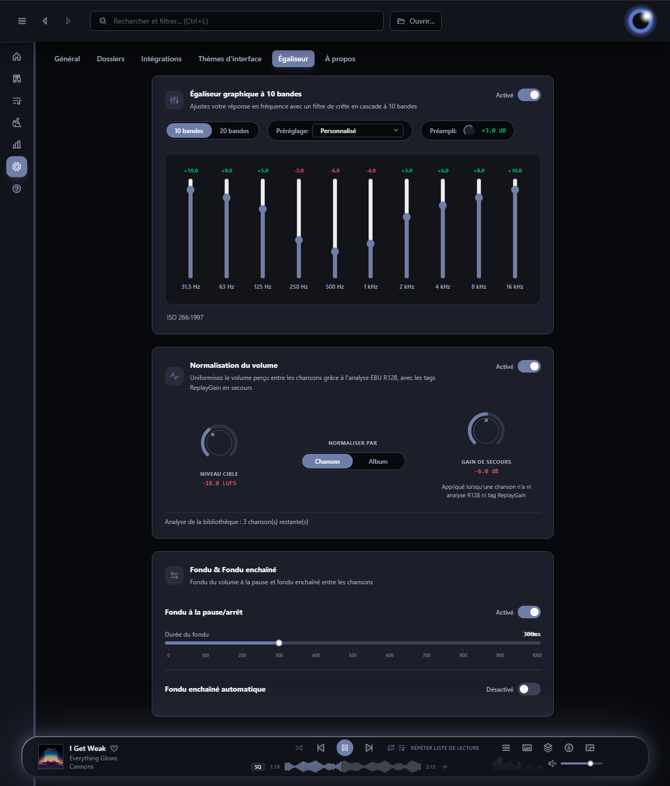
Graphique à 10 bandes — un curseur par fréquence fixe, la façon la plus rapide de façonner une courbe à l'oreille.
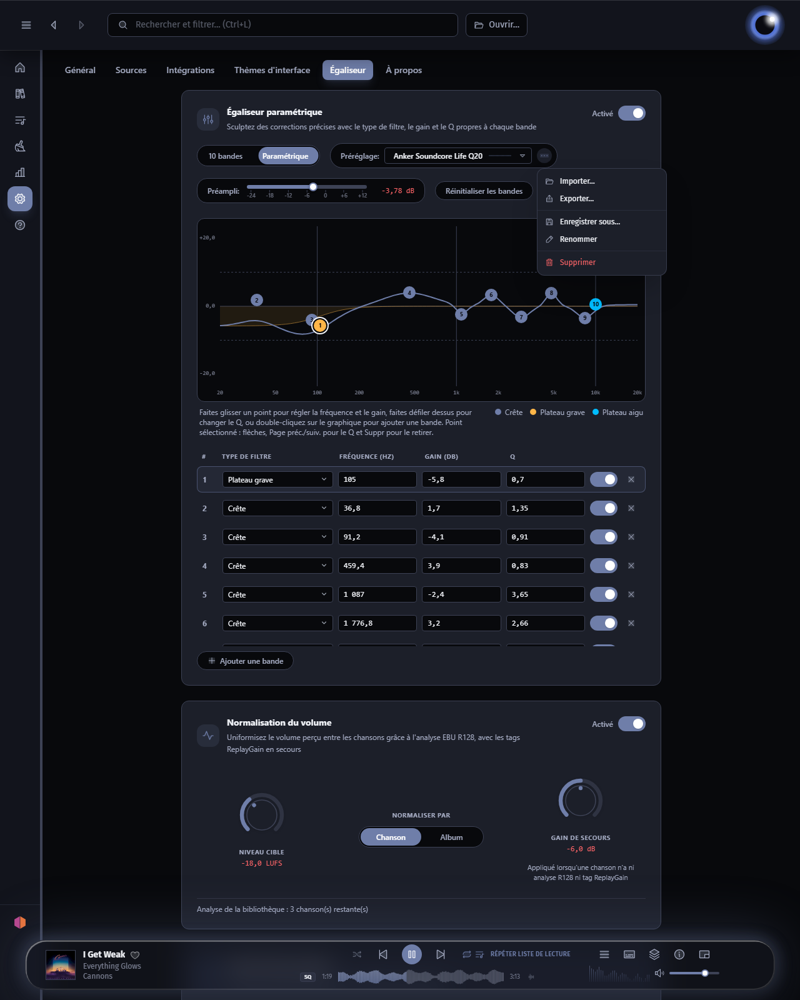
Paramétrique — faites glisser les bandes sur le graphique ou saisissez des valeurs exactes pour des corrections chirurgicales.
Paramètres
Thèmes d'interface
Choisissez parmi plusieurs thèmes intégrés, suivez le réglage clair/sombre de votre système, ou activez Pochette dynamique pour que toute l'application — y compris Lecture en cours et le mini lecteur — tire ses couleurs de la pochette d'album en cours de lecture. Toute l'application se met à jour immédiatement, sans redémarrage.
Pochette dynamique est aussi une excellente façon de découvrir de nouveaux thèmes — quand la pochette d'une chanson tombe sur une combinaison qui vous plaît, enregistrez-la comme Thème personnalisé pour la garder.
Si l'option de réduction des animations de votre système est activée, Luminous remplace les transitions de glissement et de mise à l'échelle par de simples fondus.
Vous voulez un contrôle total? Le créateur de thème personnalisé vous permet de définir vos propres couleurs.
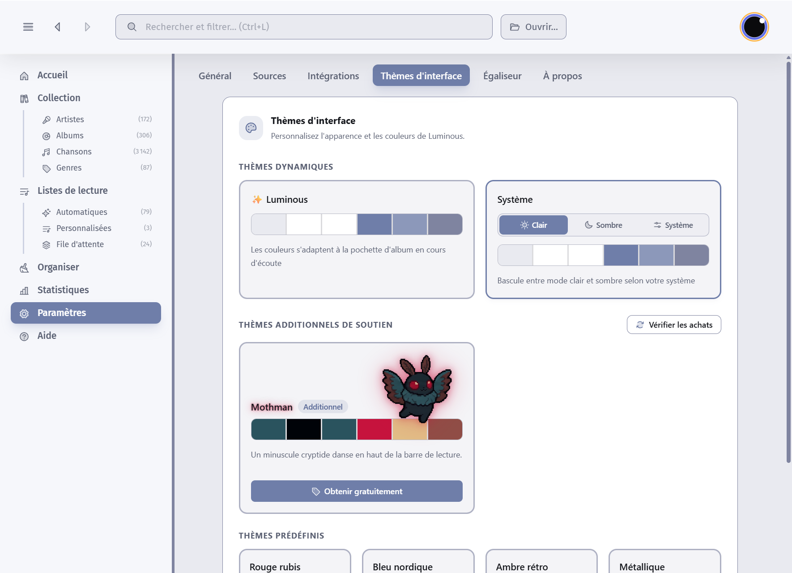
Trucs et astuces
Raccourcis clavier
Lecture
Espace
Jouer / mettre en pause
←
Piste précédente
→
Piste suivante
↑
Augmenter le volume
↓
Baisser le volume
Page préc.
Reculer de 10 s
Page suiv.
Avancer de 10 s
Navigation
CtrlL
Placer le curseur dans la barre de recherche
Échap
Fermer le menu de recherche
CtrlO
Ouvrir la chanson
Ctrl[
Reculer
Ctrl]
Avancer
CtrlA
Tout sélectionner dans la vue de liste actuelle
Disposition et affichage
Ctrl1
Afficher/masquer la barre latérale gauche
Ctrl2
Activer/désactiver le mode immersif
Ctrl3ouCtrlI
Afficher/masquer le panneau d'informations
CtrlM
Afficher/masquer le mini lecteur
Ctrl,
Ouvrir les paramètres
Ctrl/
Afficher cette liste
Les boutons latéraux de la souris et les touches dédiées d'avance/retour du navigateur permettent aussi de naviguer dans l'historique. Les touches multimédias de votre clavier ou appareil contrôlent aussi la lecture.
Paramètres
À propos et crédits
Code source disponible sur GitHub, avec des liens vers CREDITS.md et LICENSE pour la liste complète des bibliothèques utilisées par Luminous et les conditions de partage.
Sous le capot : un noyau Rust et Tauri, une interface Svelte 5, et des bibliothèques dédiées au décodage et à l'analyse audio.
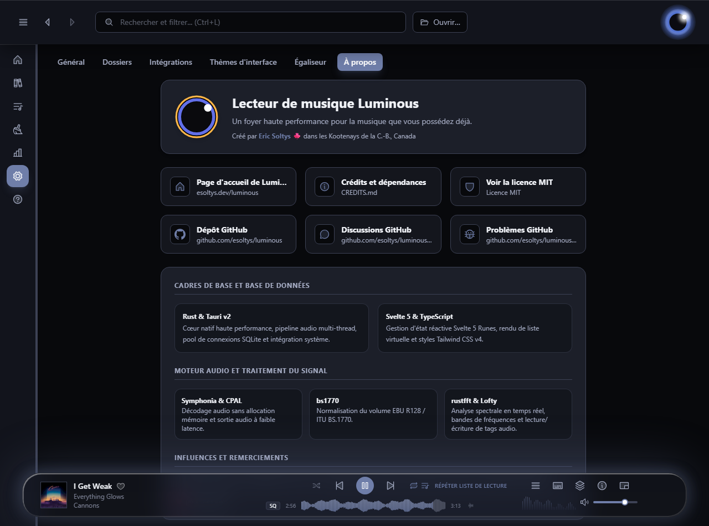
Trucs et astuces
Menus contextuels et sélection multiple
La plupart des listes de Luminous prennent en charge les menus contextuels (clic droit) et la sélection multiple, pour agir sur plusieurs pistes à la fois plutôt qu'une par une.
•
Clic droit sur une chanson ou une ligne de liste de lecture pour des actions rapides — Jouer, Ajouter à une liste de lecture, Aller à l'artiste/l'album, Organiser les fichiers, Modifier les étiquettes, Retirer.
•
Clic droit sur un album pour Lire l'album, Ajouter à la file, Modifier les infos de l'album, Ouvrir dans Picard, Partager la carte…, Épingler à l'accueil et Ne pas inclure dans les statistiques.
•
Maj-clic pour sélectionner une plage, Ctrl-clic pour ajouter des lignes individuelles, et CtrlA pour Tout sélectionner dans la vue de liste actuelle.
•
Avec une sélection active, une barre d'outils flottante apparaît avec Jouer la sélection, Ajouter à une liste de lecture, et Effacer la sélection.